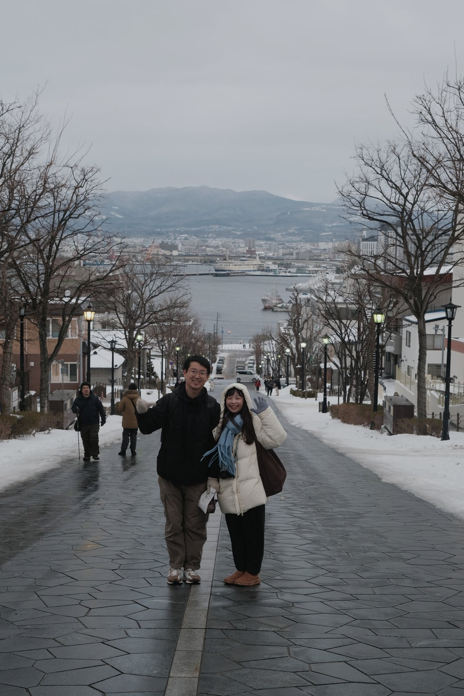

2026 Jan / South Korea / Japan / #旅途 #日常
濟州島跨年加北海道
這趟很像把一年從海邊帶到雪裡。先在濟州島跨年，再去北海道，天氣和風景都一直在換，心情也跟著慢慢切換。
海島的冬天
冬天的濟州島比想像中安靜。不是很熱鬧的海島感，反而有點冷、有點空，適合把一年慢慢收起來。
走進雪裡
到了北海道之後，畫面一下子變白。那種從海邊轉到雪地的落差很大，但也很剛好，像是真的走進新的一年。

search journal
2026 Jan / South Korea / Japan / #旅途 #日常
這趟很像把一年從海邊帶到雪裡。先在濟州島跨年，再去北海道，天氣和風景都一直在換，心情也跟著慢慢切換。
海島的冬天
冬天的濟州島比想像中安靜。不是很熱鬧的海島感，反而有點冷、有點空，適合把一年慢慢收起來。
走進雪裡
到了北海道之後，畫面一下子變白。那種從海邊轉到雪地的落差很大，但也很剛好，像是真的走進新的一年。
